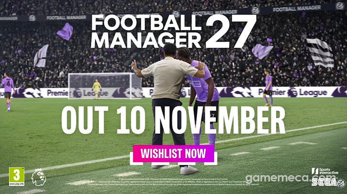
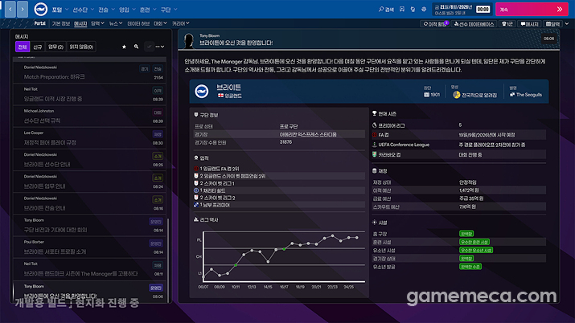

풋볼매니저27 모바일 출시일 11월 10일(글로벌), PC 차이와 가격
풋볼 매니저 27(풋볼매니저27) 모바일은 언제 나오는지, 그냥 스토어에서 받으면 되는지 궁금하셨던 분들 많으시죠. 풋볼 매니저는 직접 감독이 되어 선수 영입부터 전술, 경기 운영까지 맡는 축구 감독 시뮬레이션이에요. 공식 발표를 보면 PC와 넷플릭스 모바일 모두 11월 10일(글로벌 발표 기준)에 나오는데요, 11월 7일 기준으로 출시까지 사흘 남았네요. 모바일은 넷플릭스 구독이 필요하고 PC는 게임값이 붙는 식으로 갈리다 보니, 출시일부터 구독 조건, 가격, 한국어까지 차례로 짚어 볼게요.

트레일러 마지막 장면의 OUT 10 NOVEMBER 문구예요.
이미지 출처: SEGA·Sports Interactive 트레일러 캡처, 게임메카 보도 · 네이버 본문엔 받아서 재업로드 권장
풋볼 매니저 27 모바일 출시일, 플랫폼별로 언제인가요
PC·넷플릭스 모바일·애플 아케이드는 11월 10일(글로벌 발표 기준)에 나오고, 한국 PS5 패키지는 인벤 보도로는 11월 20일이며, 닌텐도 스위치2는 아직 공개 전이에요.
공식 안내는 전 세계 11월 10일이라고만 해서 한국에서 10일에 열리는지 11일로 넘어가는지는 단정할 수 없어요. 11일로 적은 매체도 있어서 이 글의 날짜는 전부 글로벌 발표 기준이랍니다.
| 플랫폼 | 출시일 | 이용 조건 |
|---|---|---|
| PC(Steam·Epic·Xbox PC 앱) | 11월 10일 | 게임 구매, 게임패스 포함 |
| 콘솔(PS5·Xbox) | 글로벌 11월 10일 · 한국 PS5 패키지는 인벤 보도로 11월 20일(69,800원) | 게임 구매(Xbox는 게임패스 포함) |
| 넷플릭스 모바일(FM27 Mobile) | 11월 10일 | 넷플릭스 구독자 전용 |
| 애플 아케이드(FM27 Touch) | 11월 10일(10월 19일 공식 발표) | iPhone·iPad·Mac·Apple TV |
| 닌텐도 스위치2 | 일정 미공개 | 아직 공개 전 |
10월 초 기사만 보면 애플 아케이드판이 미정으로 보이지만, 10월 19일 공식 발표로 FM27 Touch가 11월 10일에 나온다고 확정됐어요. 이전작 세이브를 클라우드로 이어서 할 수 있다고 하니, 지금은 미정이 아니라 날짜까지 나와 있답니다.
다만 한국 PS5 패키지는 일정이 달라요. 인벤글로벌 보도에 따르면 SEGA 퍼블리싱 코리아가 10월 14일 사전예약을 열었고 권장가는 69,800원, 출시일은 11월 20일이라고 해요. 공식 확인은 아직 안 된 얘기라 참고만 해 주세요.
확인 위치: 공식 출시 안내·Steam 상점 카운트다운·넷플릭스 앱 Games 탭 · 확인되면 위 문단을 실제 시각으로 교체해 주세요.
넷플릭스 모바일 버전은 구독만 있으면 되나요
FM27 Mobile은 공식 페이지에 넷플릭스 구독자 전용으로 소개돼 있어서 넷플릭스 멤버십이 필요해요.
FM27 구독료와 약관은 아직 나오지 않아서 직전작 FM26 Mobile 넷플릭스 도움말의 조건을 참고로 적어 둘게요. FM27은 달라질 수도 있어요.
직전작 FM26 Mobile 기준 조건
- 요금제와 상관없이 넷플릭스 멤버십만 있으면 돼요
- 게임만 따로 살 수 없고, 광고와 인앱결제는 없어요
- 오프라인 플레이가 되지만 주기적으로 온라인에 접속해야 해요
- 클라우드 세이브가 없어서 기기를 바꾸거나 앱을 지우면 진행이 사라져요
지원 기기는 안드로이드·아이폰·아이패드로 보도되고 있고, 전작은 안드로이드 9와 iOS 17이 권장 최소였어요.
공식 FM27 Mobile 페이지에서 넷플릭스 구독자 전용 안내가 보이는 부분이에요.
모바일과 PC·콘솔은 뭐가 다르고, 공개 정보로 본 첫인상은요
공식 비교표는 없지만 지금 알려진 차이는 경기 연출 방식과 이용 방식 두 가지고, 공개 정보만 보면 좋은 점과 아쉬운 점이 꽤 분명해요.
모바일 공식 소개는 개선된 2D 매치 엔진을 앞세우는데요, PC·콘솔 쪽 개편은 3D 경기 연출과 날씨, 시간대, 관중 분위기가 중심이에요. 모바일에도 그 3D 개편이 들어가는지는 공식 언급이 없고, 이용 방식도 모바일은 넷플릭스 구독에 얹혀 있는 반면 PC·콘솔은 게임을 직접 사야 하는 쪽이더라고요.
모바일 공식 소개에 나오는 기능
- xG까지 담은 상세 경기 데이터
- 사기와 선수 관계를 다루는 다이내믹스
- 선호 플레이·특성 훈련과 스태프 조언
- 접근성 옵션과 햅틱 피드백
아직 출시 전이라 직접 해 본 건 아니고, 공개된 정보만으로 본 첫인상이에요. 좋은 점은 xG 데이터와 다이내믹스 같은 시스템이 모바일에도 들어온다는 것, 그리고 넷플릭스 구독자라면 게임값이 따로 붙지 않는다는 점이에요. 아쉬운 점은 전작 기준으로 클라우드 세이브가 없어 기기를 바꾸면 진행이 사라진다는 것이에요.
풋볼 매니저 27 가격은 얼마고 한국어는 되나요
Steam 한국 상점 기준 정가는 69,800원이고, 사전구매가는 62,820원이에요.
11월 7일 기준 Steam 한국 상점 사전구매가는 10% 할인이 붙은 값으로 11월 10일까지예요. 영국 가격 49.99파운드는 게임메카 등 매체 보도인데, 매체에서는 국내 가격을 6만 5천 원 전후로 예상했지만 실제 Steam 한국 가격은 조금 더 높게 나왔어요. 한국어는 같은 상점의 지원 언어 20개 안에 들어 있어요.

PC 개발 빌드 화면 기준이고 모바일 화면은 아니에요. 한글 메시지함 아래에 현지화 진행 중이라고 적혀 있어요.
이미지 출처: Sports Interactive·SEGA 스크린샷, 게임메카 보도 · 네이버 본문엔 받아서 재업로드 권장
모바일 한국어는 달라요. 게임메카 무료체험 기사에는 한국어 공식 지원이라고 나오는데요, 기사는 플랫폼을 한꺼번에 적어서 모바일도 되는지는 아직 확실하지 않아요. 공식 모바일 소개에는 지원 언어 안내 자체가 없으니, 출시 뒤 확인할 건 한국어, 최소 사양, 구독료예요.
Steam 한국 상점의 가격란이에요.
확인 위치: 11월 10일 이후 넷플릭스 앱 Games 탭·스토어 안내, PlayStation Store·Xbox 스토어 한국 페이지 · 확인되면 위 문단에 실제 값을 넣어 주세요.
자주 묻는 질문
Q. 사전구매하면 지금 해 볼 수 있나요?
공식 사전구매 안내에 따르면 PC·Mac은 사전구매하면 Pre-Launch로 바로 해 볼 수 있어요. 예전 베타·얼리액세스를 대신하는 방식이고, Steam 한국 상점 기준으로는 11월 4일부터 시작된 론칭 프리뷰에서 사전구매자가 먼저 해 볼 수 있어요. 진행한 세이브는 정식판으로 이어지고, 한국 시간 10월 30일부터 11월 4일까지였던 무료 체험은 끝났어요. 콘솔과 모바일은 사전 체험 안내가 아직 없어요.
Q. Steam에서 검색하면 비슷한 이름이 여럿 나오는데 어느 게 진짜인가요?
개발 Sports Interactive·배급 SEGA로 적힌 페이지가 진짜예요. 'FD 27'(13,500원)과 'International Football Manager 27'(12월 10일 출시)은 이름만 비슷한 다른 게임이라 헷갈리기 쉬워요.
풋볼 매니저 27 출시 전 정리
출시 날짜는 11월 10일(글로벌)로 같고, 갈리는 건 이용 방식이에요. 나는 어디서 하나 고민된다면 이렇게 골라 보세요.
이럴 땐 이렇게
· 넷플릭스를 이미 쓰고 있다면 모바일이 편해요.
· 아이폰에 애플 아케이드가 있다면 Touch도 후보예요.
· 3D 연출·날씨 개편이 궁금하다면 PC·콘솔이 맞아요.
저라면 넷플릭스에 가입돼 있으면 모바일부터 켜 보고, 새로 결제해야 한다면 PC 상점 가격부터 보는 쪽이 좋겠습니다. 11월 10일에 감독석에서 만나요 ㅎㅎ
참고한 곳 (2026.11.07 기준)
· 풋볼 매니저 공식 출시 안내
· 풋볼 매니저 공식 FM27 Mobile 소개
· 풋볼 매니저 공식 FM27 Touch(애플 아케이드) 안내
· 게임메카 FM27 발매 기사
· Steam 풋볼 매니저 27 상점